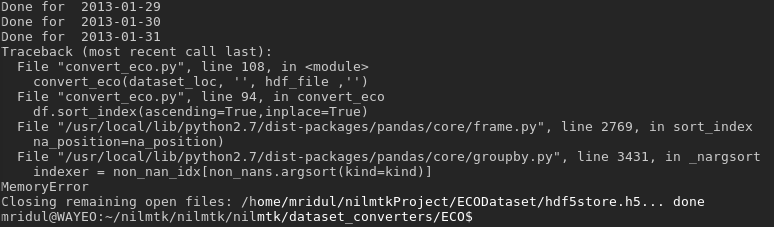

ECO Converter is being made at this repository.
Few problems as of now in the converter
Problem 1: Memory Error

While implementing the dataset, the primary problem that I am facing is the large size of the dataset. The zipped files of the Smart meter readings were about 2.5 GB in size. This decompressed and added with a timestamp of numpy.datetime64 makes the file size large.
Dataset structure
ECO Dataset has folder 'i_sm_csv' and 'i_plug_csv' where i is the building no.
- i_sm_csv has a folder i
- i_plug_csv has a folder 01, 02,....n where n are the plug numbers.
Each folder has a CSV file per day, with each file containing 86400 entries mapping every second of that day. Even for plug data which has a compressed zip size totalling 120 MB, owing to the 64-bit time stamp we get the hdf5file having a size 5-6 GB!
The storage is even greater for a smart meter, making the final file large in size.
Low resources
My initial location for the HDF5file was a drive with probably not enough storage space as it encountered memory error quite easily. Doing the same in another disk partition with plenty space made the program last longer, but it freezes my system before completing even 1 smart_meter_csv. The CPU was becoming a throttle here as a single core is used 100%. Possible multithreading implementations could help, but cannot say with surety.
Problem 2: Slow Algorithm
My approach to calculating the dataframe for a meter is to initialize a dataframe and keep appending a dataframe per csv file. This means around 200-250 operations per meter per folder. This approach is linear and takes a long time for large data. As we are simply appending the dataframes together and sorting by index in the end, one clear method to speed up the process is using a divide and conquer approach and reduce the overall complexity to O(log(n)). This puts a lesser load on the CPU. If this will benefit the algorithm, I will implement it in the converter.
However, the dataframe object created per meter becomes too huge for the smart meter computations. I will try to find some alternative for storing in the hdf5file.
Mridul